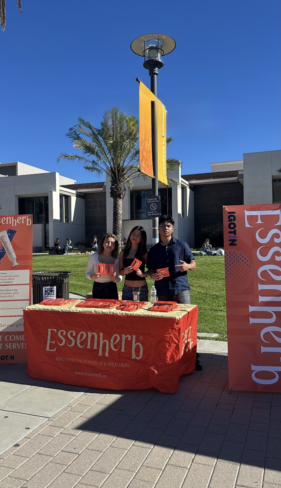

Experience
Universal Pictures (UC Santa Barbara Ambassador Program)
Volunteer | Santa Barbara, CA | September 2025 – Present
Assist Universal Pictures on-campus Ambassador by supporting promotional campaigns, tabling events, and student outreach for film releases and screenings.
Contribute to audience engagement through merchandise distribution, event support, and participation in pre-screenings.
Assist in distributing content for ambassador-led social media platforms to enhance campus visibility and drive event attendance.
Campaign Highlights:
HIM – Supported on-campus promotion, tabling, merchandise distribution, and social media content creation for ambassador channels.
Remembering Him – Assisted with campus tabling, promotional outreach, merchandise engagement, social media support, and attended a local theater pre-screening event.

Aurum Business & Marketing Club (UC Santa Barbara)
Member & Affiliate Program Participant | Santa Barbara, CA | September 2025 –
Support campus-based marketing and brand outreach initiatives through collaborations with partner brands such as Dr. G Skincare, EssenHerb, and IGotIn.
Assist with tabling, student engagement, promotional distribution, and event coordination to increase awareness and participation.
Selected for the affiliate program, contributing to branded content creation and short-form social media marketing to support partner campaigns and student-facing initiatives.


Yerba Madre
Brand Ambassador | Santa Barbara, CA | September 2025 – Present
Participate in weekly workshops to develop and execute campus marketing strategies aimed at increasing brand awareness and student engagement.
Engage with the brand’s ambassador platform by completing promotional activities, contributing to campaign initiatives, and maintaining active community involvement.
Represent the brand through peer-to-peer outreach and on-campus visibility efforts aligned with its mission and values.